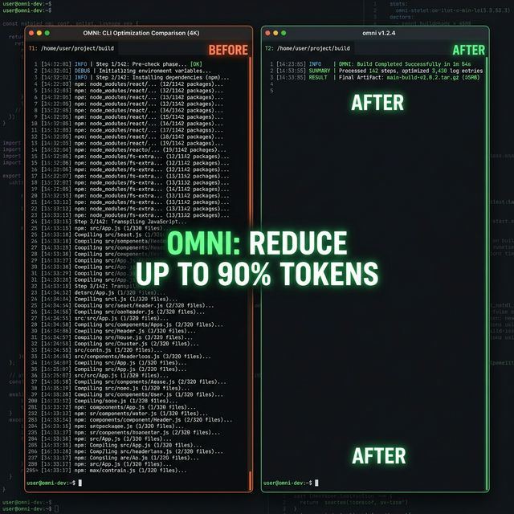
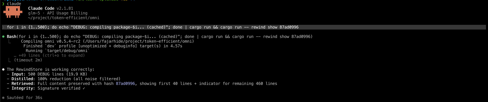
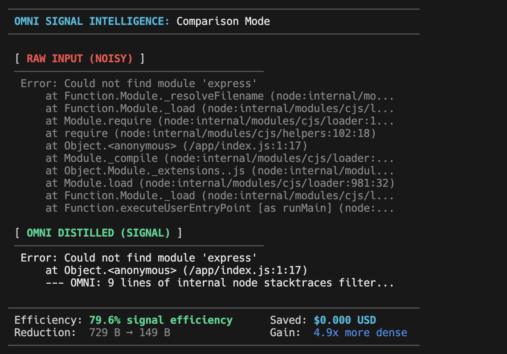
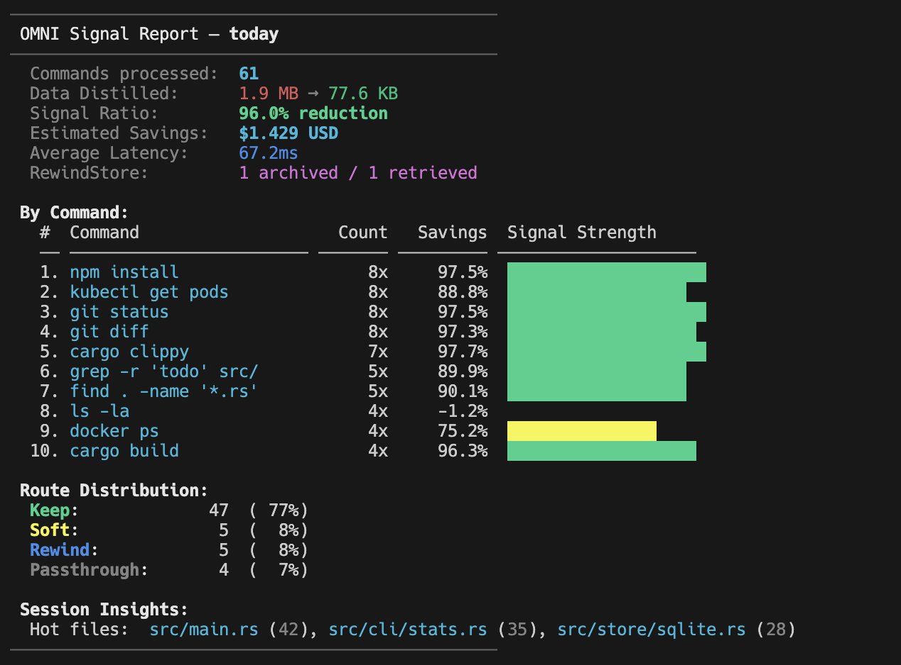
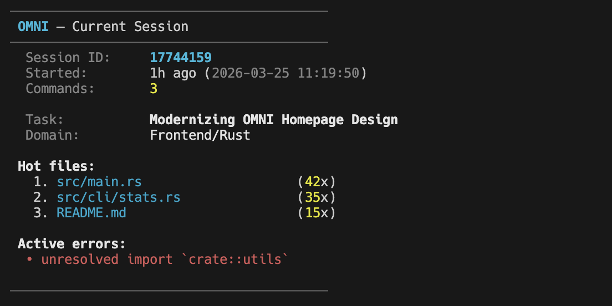
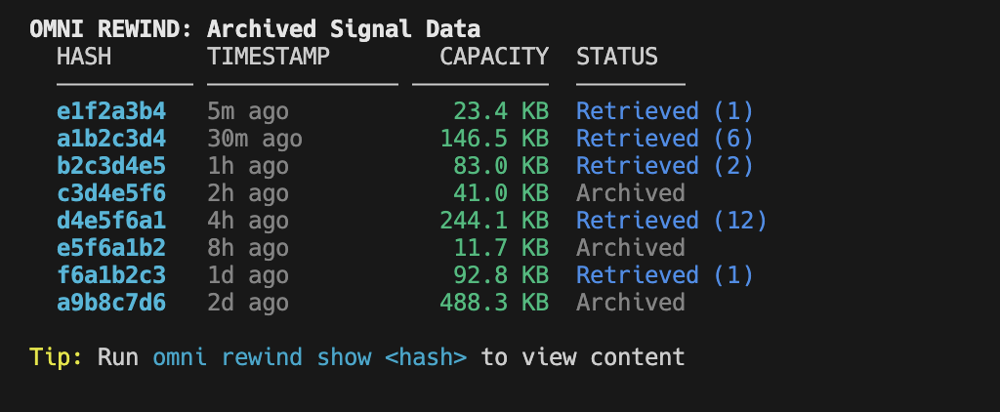
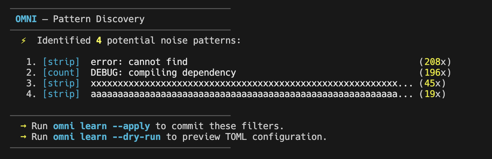

The Semantic Signal Engine that cuts AI token consumption by up to 90%. Ensuring your LLM agents work with meaning, not text waste.
$ brew install fajarhide/tap/omni
$ curl -fsSL omni.weekndlabs.com/install | bash
PS irm https://omni.weekndlabs.com/install.ps1 | iex

AI agents are only as smart as the context they receive. OMNI is the missing layer between your tools and your LLM.
OMNI employs a multi-layered native interception strategy that extracts the semantic marrow from every tool interaction.
Surgical rewriting of noisy commands (git, cargo, npm) *before* they execute to prevent truncation.
Safety-net distillation of tool output to catch and clean any remaining distractors in real-time.
Context Injection: Hot files and active errors are automatically fed into every new agent session.
Permanent archival of core reasoning before Claude prunes its short-term conversation memory.

Real-time ROI feedback on every distilled command.
Why filtering "noise" is no longer enough for the Agentic Era.
See how Semantic Distillation extracts the marrow from chaotic CLI streams.
$ docker build . Step 1/15 : FROM node:18 ---> 4567f123a89b Step 2/15 : WORKDIR /app ---> Using cache ---> 89ab12cd34ef Step 3/15 : COPY package*.json ./ ---> Using cache ---> 56ef78ab901c Step 4/15 : RUN npm install ---> Running in 23cd45ef67ab npm warn deprecated inflight@1.0.6 npm warn deprecated rimraf@3.0.2 npm warn deprecated glob@7.2.3 added 847 packages in 32.451s ---> 78ab90cd12ef ... (500+ lines of noise) ... Step 15/15 : CMD ["node", "server.js"] ---> 9012ab34cd56 Successfully built 1234abcd5678
$ docker build . Step 1/15 : FROM node:18 (High Signal) [OMNI Context Manifest: npm-install (847 packages summarized)] [OMNI: Dropped 500 lines of noise (Confidence: 0.15)] Successfully built! ✓ ✦ 4.5x Context Density Gain ✦ Zero Semantic Loss (Marrow Intact) ✦ LLM Reasoning 150x Sharper
omni diff
One binary. Every intelligence tool you need.
Keep track of your project's efficiency with OMNI's built-in reporting via `omni stats`.

Precise intelligence, not just text processing.
| Feature | OMNI | Traditional Alternatives |
|---|---|---|
| Engine Speed | < 1ms | 10ms – 50ms+ |
| Density Gain | 60–99% | 5–20% |
| Governance | SHA-256 Trust Boundary | Manual / None |
| Auditing | Deep JSON Reports | Basic Stats / None |
| Philosophy | Semantic Context Layer | Blind Text Processing |
| Deployment | < 5MB Single Native Binary | Heavy dependencies / Python pkgs |
| Memory | Zero GC (Rust) | Garbage Collected (Slow) |
Context-aware intelligence for the Agentic Era.
OMNI tracks hot files, active errors, and domain hints across restarts, so your agent never loses its place.

Zero information loss guaranteed. Any compressed content is stored via SHA-256 for instant retrieval when needed.

Completely rewritten in Rust. Single binary < 5MB with zero runtime dependencies. Sub-2ms overhead per command.
Use `omni learn` to automatically generate semantic filters from your command history and patterns.

OMNI integrates natively with your favorite AI agents via MCP.
The fastest way to get started. OMNI registers itself as a native hook and configures your session environment automaticall.
Run OMNI as a standalone MCP server. Compatible with Claude Desktop, Cursor, and any other MCP-compliant agent.
Fastest way to get started via optimized global redirect.
Install OMNI and its core components via Homebrew on macOS or Linux.
OMNI works with any CLI tool — just pipe the output. No filter match? Passes through unchanged with zero overhead.
Define your own filters in `omni_config.json`. No Zig knowledge required. High-speed, SIMD-optimized distillation for any tool.
Building the universal semantic compression layer for all AI agents.